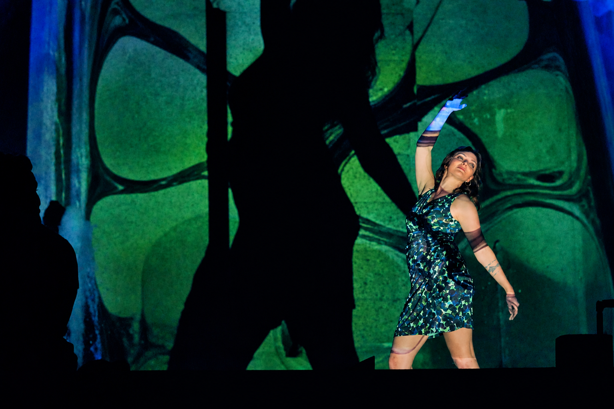

LIVE PERFORMANCE
Painting in motion
Live Ebru, projection, and dance in a shared composition with Celeste Gaiera.

OX MARBLING · WASHINGTON, DC
A live encounter of Ebru, light, and movement—created for restaurants, private events, and rooms that want to become part of the artwork.
Request a performance ↘Where Ebru marbling meets contemporary dance, projection, and music.
Feyyaz Chemen’s water-based paintings unfold in real time, guided by patience, touch, and chance, while Celeste Gaiera’s movement gives their shifting forms a human, physical presence. Together, they transform the act of making art into a shared moment: intimate enough to feel personal, yet expansive enough to animate a room, a wall, or an entire event.
Rooted in Turkish marbling and shaped by Celeste’s classical and contemporary dance practice, each performance creates a conversation between water, body, light, rhythm, and space. Guests are not simply spectators; they become part of an unfolding visual experience that cannot be repeated in exactly the same way twice.
LIVE ART · FILM · MARBLING
Every piece starts with the unpredictable movement of paint on water, then develops into a performance, moving image, or object made by hand.
LIVE PERFORMANCE
Live Ebru, projection, and dance in a shared composition with Celeste Gaiera.

A SHARED COMPOSITION
Color and pattern take form on water before the audience.
The evolving image expands beyond the basin and into the space.
Dance enters into dialogue with the painting’s rhythm and visual energy.
FROM WATER TO PROJECTION
Each performance begins with a live Ebru painting created on water. Its colors and movement become the visual score for the room—expanded through projection as Celeste dances within it.
Watch the painting take shape ↗OX MARBLING
“A painting on water exists for a moment. Performance lets that moment become a world.”
Follow the studio ↗THE ARTISTS
Feyyaz Chemen is an Ebru artist and the founder of OX Marbling. He expands the centuries-old art of painting on water through live performance, projection, movement, and immersive visual environments.
Feyyaz Chemen is an Ebru artist and the founder of OX Marbling. His practice began in Ankara, Türkiye, in 2014, where he trained in the classical discipline of painting on water. Working with natural pigments, ox gall, combs, and traditional floral forms, he developed a respect for the precision, patience, and controlled unpredictability at the heart of Ebru.
After relocating to the United States in 2015, Chemen began developing live presentations that place the making process at the center of the experience. His work treats the marbling tray not only as a studio tool, but as a site of performance: color and pattern forming in real time before an audience.
Through OX Marbling, Chemen extends Ebru beyond paper into objects, textiles, body-based work, projection, and site-responsive visual environments. He uses a camera above the Ebru tray—known in Turkish as a tekne, or “boat”—to carry the image beyond the water’s surface and into the surrounding space. The resulting work makes a traditionally intimate process visible at architectural scale, without losing its connection to touch and material.
Chemen’s current practice brings live marbling into dialogue with dancers, musicians, models, and movement-based performance. Paint moves across water while the body moves through space; projection, rhythm, and choreography allow the flow of marbling to be felt as a live composition. His work appears across cultural programs, private events, fashion contexts, music settings, and commissioned installations.
Rather than making Ebru contemporary for its own sake, Chemen seeks forms that allow the tradition to meet contemporary audiences while preserving its essential relationship to water, touch, patience, and chance.
Celeste Gaiera is a professional ballerina and collaborative performer with Richmond Ballet. Her poised, expressive movement gives the changing visual world a human presence.
Celeste Gaiera’s love for dance began as a young child in New Zealand where she grew up. From a young age she attended pre-professional ballet training programs in Oregon, San Francisco, and Pennsylvania training classical. Celeste joined Texas Ballet Theater as a company member in 2017-2021 under the direction of Ben Stevenson, O.B.E, performing a variety of both classical and contemporary ballets. She then moved to Richmond, Virginia, to dance with the Richmond Ballet, where she has been contracted for the past six years. As a company dancer of RIchmond Ballet, Celeste has danced a variety of soloist roles in a range of classical, neo-classical, and modern ballets by notable choreppgraphers such as Balanchine, Jennifer Archaibald, Val Caniparoli, Paul Taylor, and Trey McIntyre. This is Celeste's tenth year dancing professionally and she enjoys moving audiences with her passion and her art.
Celeste is a lover of travel and enjoys dancing abroad on her off-seasons in the summer. She has danced at Netherlands Dance Theatre in The Hague, performing works by Paul Lightfoot, Sol León, Mengahn Lou, and Crystal Pite. She has spent many of her summers dancing at the Orsolina28 Arts Foundation in Moncalvo, Italy performing works by HumanHood and Jiří Kylían. Celeste performed in the Follonica Fonderie Festival in Follonica, Italy dancing a new creation by Mattia Russo and Antonio de Rosa as a part of KOR'SIA. Celeste was selected to dance in the National Choreographers Initiative in 2022 and 2024, where she enjoyed the collaborative process of creating new work with choreographers.
Beyond the ballet studio, Celeste is drawn to collaborations that bring different art forms into conversation. She has danced in music videos and short films, and collaborated with an exhibition at the Modern Art Museum of Fort Worth.
Her screen credits include the dance short films The Way We Change, directed and choreographed by Alexandra Light; The Couple in Bed, directed and produced by Brock Marion Jr., with choreography by Celeste; and Metamorphosis, a solo project she directed and choreographed herself.
Her music video credits include “Satellite” by Windsong, “Horizon” by Holy River, “Track 004” by Troy Jones, “Fiddle Baby” by Theocles Herrin, and “Grace” by Jonathan Brown. Through her work onstage, on film, and around the world, Celeste continues to explore the many ways dance can connect with audiences. Celeste has done collaborations with artist Feyyaz Chemem, combining live Ebru painting, projection, and dance at different art events. Celeste loves bringing her dance to new artisits and audiences. She believes that when we join art forms in collaboration, they amplify eachother, creating something greater than what either could evoke alone.
FOR HOSPITALITY & PRIVATE EVENTS
Designed for intimate dining rooms, cultural evenings, private celebrations, and brand gatherings.
Each presentation is shaped with the venue’s atmosphere, guest flow, and technical possibilities in mind.
PERFORMANCE INQUIRIES
For availability and a tailored performance conversation, contact Feyyaz directly at bookings@feyyazchemen.com.
Email bookings ↗